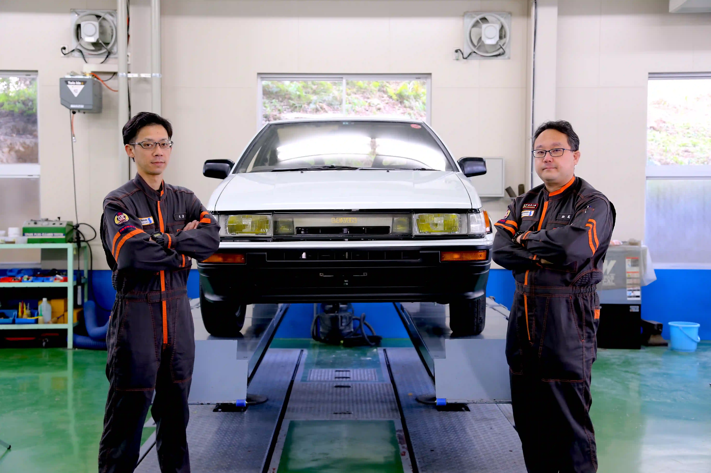

4A-GE型エンジンの
鼓動が聞こえる・・・。
昭和の名機と呼ばれる4A-GE型エンジン。
AE86レビン／トレノを皮切りにさまざまな車種に搭載された
「ツインカム16」は、アイドリングからレブリミットの7700rpmまで
わずか0.78秒で到達するシャープな吹け上がりが特徴のエンジン。
当時の若者に絶大な支持を得たスポーツユニットの傑作と言われている。
AE86レビン／トレノを皮切りにさまざまな車種に搭載された
「ツインカム16」は、アイドリングからレブリミットの7700rpmまで
わずか0.78秒で到達するシャープな吹け上がりが特徴のエンジン。
当時の若者に絶大な支持を得たスポーツユニットの傑作と言われている。
まるで新品のように美しく甦ったエンジン。
10ヶ月前に、エンジンルームから取り出されたエンジンが、
再び戻ってくる瞬間に、誰もが息をのむ・・・。
慎重にそして丁寧に、4A-GE型エンジンを取り付けて行きます。
イグニッションを回すと、眠りから冷めたエンジンが唸り出します。
10ヶ月前に、エンジンルームから取り出されたエンジンが、
再び戻ってくる瞬間に、誰もが息をのむ・・・。
慎重にそして丁寧に、4A-GE型エンジンを取り付けて行きます。
イグニッションを回すと、眠りから冷めたエンジンが唸り出します。
4A-GE型エンジンの
出力を試す。


車検業務などで、
陸運局が実際に使用される車検ラインにて
レビンの安全性を検査します。
陸運局が実際に使用される車検ラインにて
レビンの安全性を検査します。
KICの本格的なシャシダイナモメーターで性能試験を実施。
エンジンオーバーホールで組み上がった4A-GEエンジンから
どれだけのパワーが出力されているか測定します。
AE86LEVINのパワフルに甦った姿を、
正確なデータにて証明させます。
エンジンオーバーホールで組み上がった4A-GEエンジンから
どれだけのパワーが出力されているか測定します。
AE86LEVINのパワフルに甦った姿を、
正確なデータにて証明させます。
ついにAE86レビンが
走り出す。
KICの敷地内にあるコースにて走行。
10ヶ月のレストアプロジェクトの成果が試される時。
学生たちが見守る中、レビンが力強く走り抜けます。
動かなかったエンジン、朽ちたボディだった車両は
40年前のクルマと思えないような輝きを放ちます。
10ヶ月のレストアプロジェクトの成果が試される時。
学生たちが見守る中、レビンが力強く走り抜けます。
動かなかったエンジン、朽ちたボディだった車両は
40年前のクルマと思えないような輝きを放ちます。
10ヶ月間、
挑み続けたプロジェクト。
KIC学生の思いも走り出す。